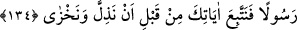
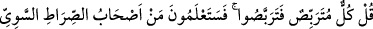
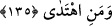

öğrenmediği hâlde Kur’ân’ın önceki kitaplarda olanların özünü ihtivâ etmesi, apaçık bir
i’cazdır.
Sonra âyet, onların şer‘î hükümleri terk edip sapıklık yollarına gitmek için hiçbir
mazeretleri olmadığını şöyle açıklamıştır:
134. Eğer biz, bundan (Kur’an’dan) önce onları bir azapla helâk etseydik,
muhakkak ki şöyle diyeceklerdi: “Ya Rabbi! Bize bir elçi gönderseydin de, şu
aşağılığa ve rüsvaylığa düşmeden önce âyetlerine uysaydık!”
“Eğer biz, bundan” apaçık bir delil olan Kur’ân gelmeden “önce onları” dünyada
köklerini kazıyan “bir azab ile helâk etseydik, muhakkak ki” kıyamet günü delil öne
sürmek üzere “şöyle diyeceklerdi: “Ya Rabbi! Bize” dünyada bir kitap ile birlikte “bir
elçi gönderseydin de,” sapkınlık zilletiyle “şu aşağılığa ve rüsvaylığa düşmeden
önce” o elçi ile birlikte indirdiğin “âyetlerine uysaydık!” Bedir gününde olduğu gibi
daha dünyada iken katl, esâret azabıyla ve dalâlet zilletiyle aşağılığa düşmeseydik.
Âhiret azâbı ve bugün ateşe atılarak rüsvay olmasaydık.
Fakat biz onları apaçık delil gelmeden önce helâk etmedik. Böylece mâzeretleri
ortadan kalktı. İşte o zaman hakîkati îtiraf ile şöyle dediler: “Evet, bize uyarıcı geldi,
ama biz yalanladık ve: “Allah hiçbir şey indirmedi, siz ancak büyük bir sapıklık
içindesiniz” dedik.” (el-Mülk, 67/9)
el-Es’iletü’l-mukhime’de şöyle der: “Bu âyet, mükellef kulları için en uygun olanı
(aslah) yapmanın Allâh’a vâcib olduğuna delâlet etmektedir. Eğer böyle yapmazsa, “Sen
bize bunu yapsaydın da inansaydık.” demek sûretiyle Allah Teâlâ aleyhine onların için
bir delil olurdu.” denilecek olursa bunun cevabı şöyledir: “Eğer Allah Teâlâ hakkında
kulları için en uygun olanı (aslah) yapmak vâcib olsaydı, onları yaratmazdı.
İnanmayacaklarını
bildiği
halde
onları
yaratmasında,
onlara
peygamberler
göndermesinde onlar için en uygun olana (aslah) riâyet söz konusu değildir. Bununla
birlikte O, peygamberler göndermiş, hucceti/delili güçlendirmiş, yardımını çekmiştir.
Mâliklik hakkıyla dilediğini yapmak Allah Teâlâ’ya âiddir.
135. De ki: “Herkes beklemektedir: Öyle ise siz de bekleyin. Yakında
anlayacaksınız; doğru düzgün yolun yolcuları kimmiş ve hidayette olan kimmiş!”